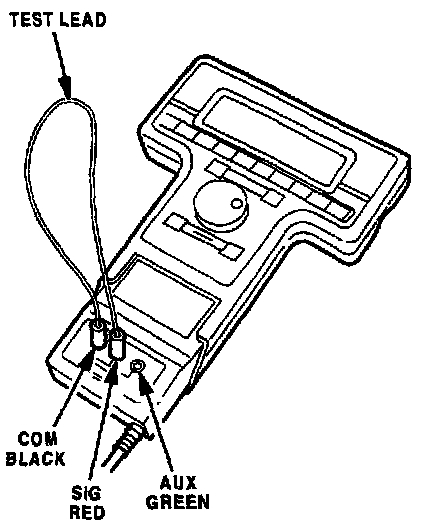
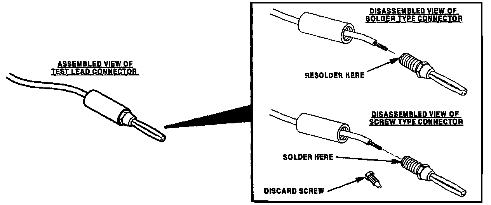

NGS System - Test Lead Inspection
Bulletin No.: 006/98Issued: 09/30/98
Revised
Category
ST
Applicable Models
All Models
Subject:
INSPECTION PROCEDURE FOR TEST LEAD OF NGS TESTER
APPLICABLE MODEL(S) VINS
All models
DESCRIPTION
The NGS test lead connectors may become loose or corroded causing incorrect readings. Before using the ohm meter function of the NGS tester for diagnosing electrical circuits, check for excessive resistance in the test leads and connectors and repair them if necessary.
Note:
Two types of connectors (screw and solder) are used on the NGS test leads.
INSPECTION PROCEDURE

1. Verify concern.
2. Select "Ohm Meter" on the tester and connect a test lead between the COM (black) and SIG (red) terminal on the NGS tester and note the reading.
^ A reading of 0 ohms indicates that the test lead and connections do not have excess resistance.
^ A reading other than 0 ohms may indicate a poor connection (go to STEP 3).

3. Disassemble the connectors and check for corrosion, solder breakage, or looseness. Resolder connections to repair as necessary. Refer to illustration.
4. Verify repair.

DISCLAIMER